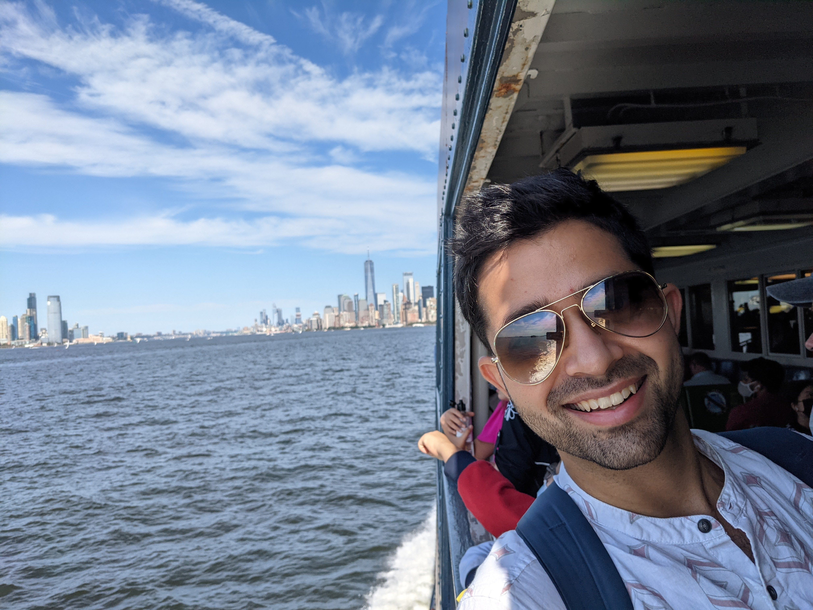

|  | Kumar Kshitij Patel
PhD student, |
I am a third year PhD student at Toyota Technological Institute at Chicago (TTIC) advised by Prof. Nati Srebro. I am interested in understanding optimization algorithms in practically relevant settings, i.e., with distributed computation and non-convexity. This has motivated me to study the oracle complexity of optimization for Federated Learning, specially in settings with data and systems heterogeneity. Recently, I have been trying to understand the game-theoretic considerations for collaboration protocols with Prof. Rad Niazadeh at the Chicago Booth School. I am also the current organizer for the Machine Learning and Optimization Reading Group at TTIC. If you have a work you'd like to present at our reading group, or want us to know about, please ping Nati or me.
During summer 2020, I worked with the amazing team at Codeguru, Amazon Web Service as an applied scientist intern. And before joining TTIC, I obtained my BTech in Computer Science and Engineering at Indian Institute of Technology, Kanpur. There I was fortunate to work with Prof. Purushottam Kar on Bandit Learning algorithms. I also spent a year of my undergraduate on academic exchange at École Polytechnique Fédérale de Lausanne (EPFL) where I worked at the Machine Learning and Optimization Laboratory (MLO) with Prof. Martin Jaggi.
[Curriculum Vitae] [Google Scholar] I am currently looking for research internships for 2022.A Stochastic Newton Algorithm for Distributed Convex Optimization [Recorded Talk]
Brian Bullins, Kumar Kshitij Patel, Ohad Shamir, Nathan Srebro, Blake Woodworth (Alphabetical ordering)
NeurIPS 2021
Minibatch vs Local SGD for Heterogeneous Distributed Learning [Recorded Talk]
Blake Woodworth, Kumar Kshitij Patel, Nathan Srebro
NeurIPS 2020
Is Local SGD Better than Minibatch SGD?
Blake Woodworth, Kumar Kshitij Patel, Sebastian U. Stich, Zhen Dai, Brian Bullins, H. Brendan McMahan, Ohad Shamir, Nathan Srebro
ICML 2020
Don't Use Large Mini-batches, Use Local SGD [Code]
Tao Lin, Sebastian U. Stich, Kumar Kshitij Patel, Martin Jaggi
ICLR 2020
Communication Trade-offs for Local-SGD with Large Step Size
Kumar Kshitij Patel, Aymeric Dieuleveut
NeurIPS 2019
Corruption-Tolerant Bandit Learning
Sayash Kapoor, Kumar Kshitij Patel, Purushottam Kar
Springer Machine Learning Journal 2019
I served/am serving as a reviewer for STOC'21, ICML'21, NeurIPS'21, ICLR'22, AISTATS'22, Springer MLJ, and as a volunteer for ICML'20, ICLR'20.
I am participating in the NSF-Simon's research collaboration on the Mathematics of Deep Learning (MoDL).
I co-organized the TTIC Student Workshop 2021, with Gene Li. We also organized a TTIC/Uchicago student theory seminar in Spring 2021. If you'd like to take over and re-start this series, please let me know.
I was also a Teaching Assistant and co-organizer for the Research at TTIC Colloquium for Fall-Winter 2021.
I took part in the Machine Learning Summer School at Tübingen, Germany during summer 2020.